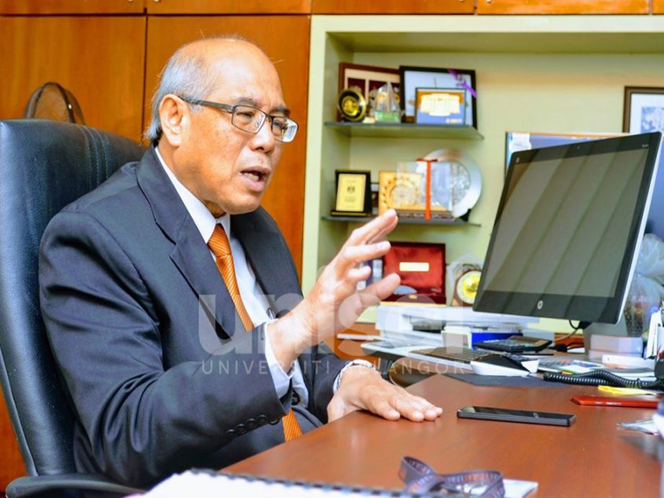

UNISEL E-Learning Portal
Your Productivity Partner PPDM was established in April 2014 and under the supervision of the Deputy Vice-Chancellor's Office. PPDM is responsible for providing Student Centered Learning environments using the online Web Technology medium for the improvement of learning and teaching activities. It is in line with the National E-Learning Policy (DePAN) enacted and enforced by the Ministry of Education Malaysia.
-
Our Story
The main role of PPDM is to provide academic staff and students with online learning facilities. -
DePAN 2.0
Committed to provide a conducive digital learning environment in order to develop ethical professionals.
-
Vision & Mission
To be a renown centre of excellence in the requisition of innovative instructional technologies. -
Gallery
To be committed to the highest standards of honesty, truth and fairness, as well as mutual respect for others.
University News
UNISEL Menyumbang Bantuan Kepada Frontliner
Universiti Selangor (UNISEL) menerusi Fakulti Kejuruteraan dan Sains Hayat (FKSH) berjaya menghasilkan alat pelindung muka (face shield) untuk diserahkan kepada kakitangan barisan hadapan Kementerian Kesihatan Malaysia yang terlibat...
UNISEL Raih 2 Emas Beserta Anugerah
Skuad STEM Universiti Selangor (UNISEL) diketuai oleh Dr. Hazeeq Hazwan Azman menerima dua pingat emas di Malaysia Technology Expo (MTE) 2020 yang berlangsung di Pusat Dagangan Dunia Putra (PWTC) pada 20-22 Februari...
UNISEL Tawar Kaedah Pengajian Fleksibel
Dunia kini sedang dilanda penularan wabak penyakit coronavirus atau lebih dikenali sebagai COVID-19 dan Pertubuhan Kesihatan Sedunia (WHO) juga telah mengisytiharkan pandemik di seluruh dunia. Malaysia merupakan negara yang turut terjejas oleh...